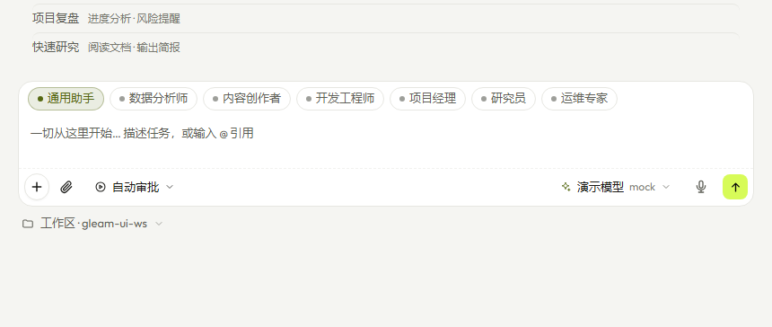

Interface
它退到一边， 你专心做事。

主界面 · 一句话开始

模型配置 · 多厂商支持

引擎设置 · 精细控制

专家团 · 输入框内切换
Local-first · 10 MB · Zero cloud dependency
Gleam（微光）—— 10 MB 单文件，规划-执行-反思闭环。数据留在本机，模型随你切换。
它在你没看着的时候做完了整件事。
Capabilities
先把目标拆成有序的步骤，再动手。
DAG 并发推进，每个工具调用都过安全门控。
自评 0–100 分，低分自动重规划。
每个目标都跑完这个闭环——不用你记着催。
对话和任务数据默认留在本机。只有调用真实 LLM 时才走你配置的 API。
智谱、DeepSeek、Kimi、Qwen、OpenAI、Anthropic 等多家 API；内置 Mock 模型可离线体验。
预设分析师、工程师、产品经理等角色，也可自定义。不同任务用不同专家。
紧凑的工具 schema、指数退避重试、角色提示词精简，Token 消耗降低 55%。
内置语音识别，说话就能输入，支持中英文。
Interface

三步上手，无需复杂配置
选择你的平台，下载单文件可执行程序。
# Windows
gleam-windows-amd64.exe
双击运行，默认使用 Mock 模型，可离线体验。
# 双击即可运行
# 或命令行启动
./gleam
如需真实 LLM，在设置页配置 API Key。
# 支持 OpenAI / Anthropic / 智谱 / 深度求索等
#
也可自建兼容 OpenAI 协议的服务